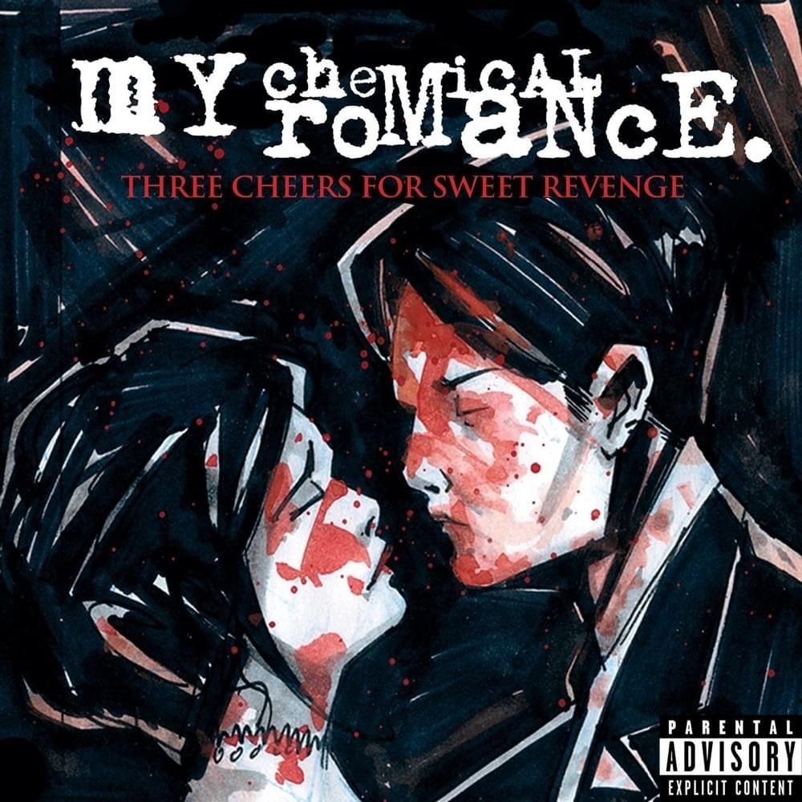
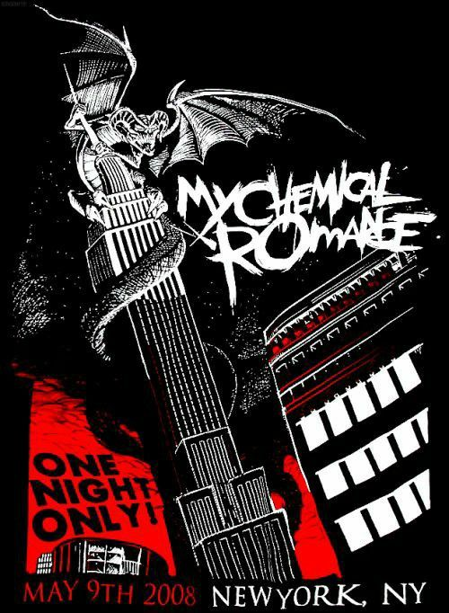

Three Cheers for Sweet Revenge
Three Cheers for Sweet Revenge es el segundo álbum de estudio de My Chemical Romance. Fue lanzado en 2004 y representa una de las etapas más reconocidas de la banda.
El álbum combina elementos de rock alternativo, post-hardcore y emo, acompañado de una estética oscura y teatral.


Canciones
- Helena
- Give 'Em Hell, Kid
- To the End
- You Know What They Do to Guys Like Us in Prison
- I'm Not Okay (I Promise)
- The Ghost of You
- The Jetset Life Is Gonna Kill You
- Interlude
- Thank You for the Venom
- Hang 'Em High
- It's Not a Fashion Statement, It's a Fucking Deathwish
- Cemetery Drive
- I Never Told You What I Do for a Living
Una historia de venganza
El álbum gira alrededor de una historia ficticia relacionada con dos amantes y la muerte. Varias canciones forman parte de esta narrativa y utilizan temas de amor, pérdida, venganza y muerte.
Esta narrativa también ayudó a construir la estética teatral que caracteriza esta etapa de My Chemical Romance.

Información del álbum
Artista: My Chemical Romance
Álbum: Three Cheers for Sweet Revenge
Lanzamiento: 2004
Género: Rock alternativo
Canciones: 13